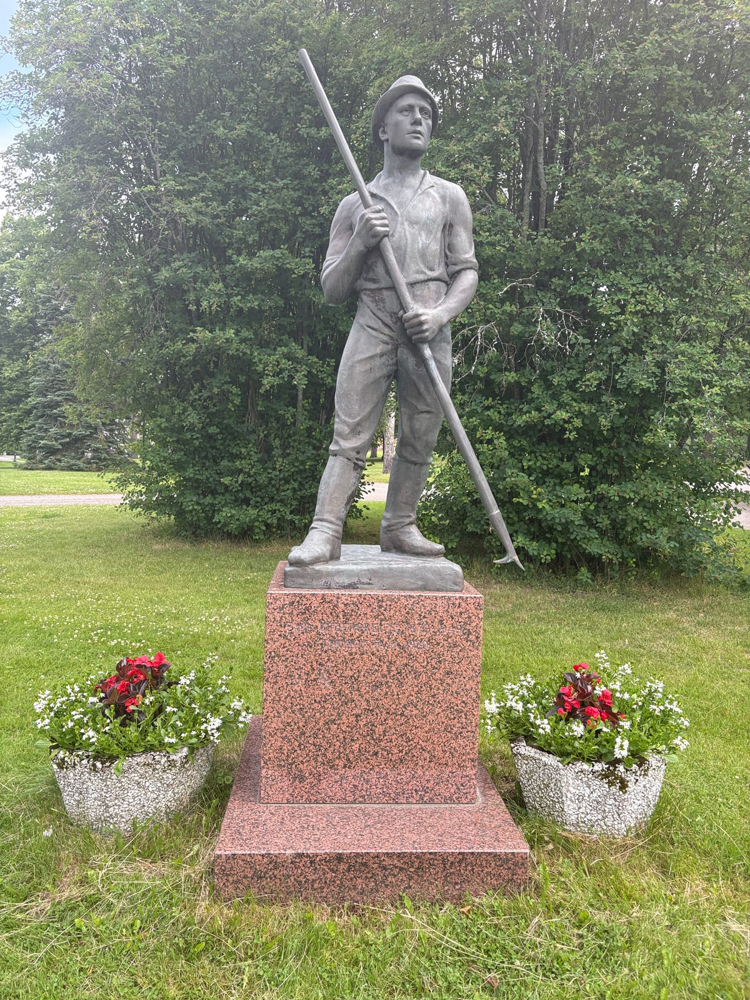
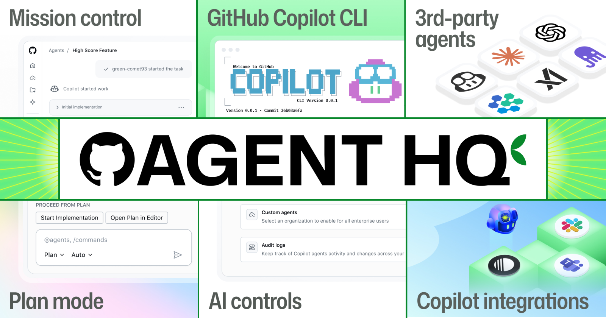

The ontology lives in the team
20 June 2026 · Risto Anton Paarni · Helsinki, Finland

Write it on the wall.
The ontology lives in the team — not in the database.
That is not just a headcount change. It is an ontological one. When the team shrinks, the knowledge leaves with it.
And because pointing out the loss is not a strategy, here is the honest part: the only way to stop it is to capture the ontology into a governed, sovereign world model before it walks out the door.
Three layers of memory at Kaukopää
Architect Väinö Vähäkallio designed the Kaukopää site so that hierarchy was visible in concrete: the engineers' villas on the point, the workers' quarter below. KA1 "Presidentti" started in 1950 and still runs. KA4, around 1957, brought liquid-packaging board — the machine that changed how the world packs liquids. Imatra remains the world's leading liquid-packaging-board site.
That mill carries three layers of ontology:
- The diggers' sweat. The men who built it in 1934–1935 knew why the arch above the digester curves exactly as it does, which beam carries what load, where the ground softens. Knowledge that was never written down.
- The architect's ruler. Vähäkallio put the social and operational hierarchy into stone. The knowledge of why things are where they are — not just structurally, but in terms of how the site thinks.
- The engineers' drawings. KA1 through KA4: what each machine is, how it was modified, what "Presidentti" means in practice today versus what the manual says. The living difference between the spec and the plant.
Two of those three layers have already left. The third is still there — carried by the people who stayed.
The cynical wedge
Nobody walks into a forty-year plant and asks the crew to rethink how they work. The industrial immune system — the team that has protected the plant for decades — does not open the door.
So you don't ask. You leave one small, harmless tool that quietly does something the old team never could. That first win earns the right to a second. And the governed world model that accumulates behind it is a moat no competitor can copy.
Perception Capital — sovereign, lineage-logged, EU-resident, bound to a verified human — is the only capital class that compounds with every field operation. We are proving it in deployment; a world model deepens only in practice, not in a pitch deck. But the alternative to capturing it is watching it leave with the team. That process is already underway.
The short version
- Every factory is an ontology. It lives in the team, not in a database.
- Kaukopää: three layers — diggers' sweat, architect's ruler, engineers' drawings. Two already gone.
- The team has thinned from a peak of several thousand to around a thousand.
- You don't barge in. You leave one harmless tool that does something new. That earns the next gate.
- A governed, sovereign world model is the only way to capture the ontology before it leaves.

Read next
- Don't Point the LLM at the Data — Point It at the Ontology
- Your Model Can't Beat Your Noise Floor
- Prompt, People, Plant, Perception — The Four Capital Classes of the Agentic Era
- Software You Operate vs Intelligence That Operates
- Ontologia elää tiimin aivoissa (FI)
Risto Anton Paarni — CEO, Lifetime Oy · Editor in Chief, Lifetime Scope
Journal.
Sources: Stora Enso (newsroom), Aikakone/elka.fi, yle.fi, Wikipedia. Kaukopää facts
verified 20.06.2026. Patron quote anonymised. DWS architecture catalogued in
ONTOLOGY.md,
docs/field-notes/2026-06-19-token-capital-human-capital-control-room-capital.md
(v2.0), and docs/PHD_FIREHORSE_EN.md §14.27. This post is commentary; it does
not claim any partnership with Stora Enso.